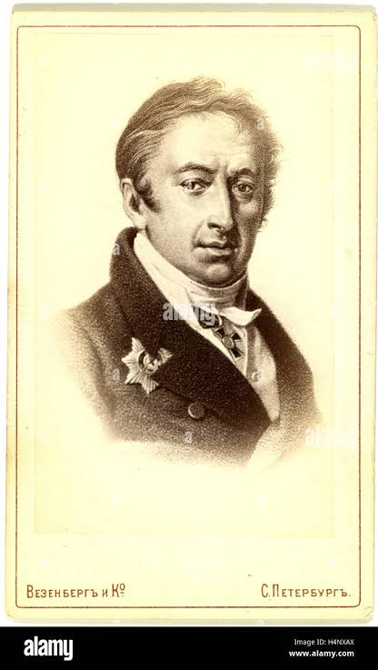

Nikolai Karamzin (1766-1826)
Major works
- Poor Liza (1792)
- Letters of a Russian Traveler (1791-92), modeled after Laurence Sterne's "A Sentimenal Journey Through France and Italy (Karamzin published a translation of Sterne in his Moscow Journal in 1797-1801)
- History of the Russian State, a twelve volume history of the Russian Empire. The major point in the introduction "История народа принадлежит царю." Писал Николай Карамзин. Посвятил историю Александру I; still true for Putin's era (read the most recent high school textbook by Medinsky)
